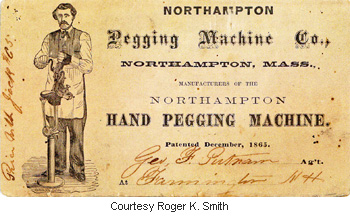
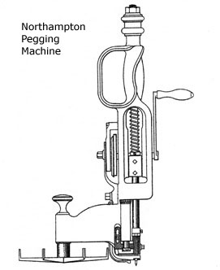
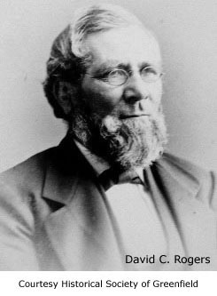
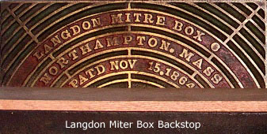
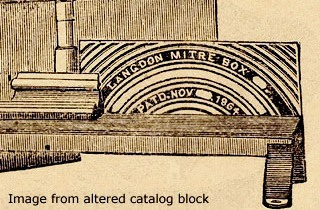

Although Leander W. Langdon is credited with the invention of the cast iron miter box that bears his name, there is no hard evidence to indicate that he was involved in its ongoing manufacture. The circumstances of the earliest production of his design are murky, and though he patented improvements to his miter box a decade after its introduction, the rights to its manufacture may have already been in the hands of others. The earliest known illustration of a commercially available Langdon miter box dates from 1867—three years after its invention. The tool depicted was manufactured in Northampton, Massachusetts, by an entity known as the Langdon Miter Box Company, and the owners and superintendent of the business that produced it are not identified.(1) This early version of the Langdon miter box was sold by William H. Todd, a Northampton hardware dealer.
A notice in the August 1873 issue of Manufacturer and Builder refers to the Langdon’s manufacture by the Northampton Pegging Machine Company. The pegging machine company was incorporated in 1869 to manufacture devices for attaching the soles of shoes to their uppers with wooden pegs. Cheaper to manufacture but less comfortable than footwear with hand-sewn soles, pegged shoes and boots were popular with the middle and working classes. The first pegging machines were developed around 1830, but it would be another twenty years before the glitches were worked out. By 1860, machines capable of large-scale production were the order of the day, and pegged footwear came to represent three-quarters of the total domestic output. With the invention of industrial sewing machines capable of stitching leather, the cost differential between pegged and sewn soles decreased, and pegged footwear gradually fell from favor. Production of pegged shoes and boots peaked in the mid-1870s and by the later 1890s represented only a small share of the U.S. market.
The portable, hand-operated machines produced by the Northampton Pegging Machine Company were not designed for use in large factory settings but were intended for smaller, less capital-intensive operations. The devices were based on an 1865 patent of Louis Goddu of Lowell, Massachusetts, and an 1869 patent by Francis J. Vittum of Newburyport. There is no record that either man worked for the company, and although the Northampton hand peggers that have come to light are marked with both dates, they bear only a slight resemblance to the machines depicted in these early patent documents.(2) On February 13, 1872, Augustus F. Strong, a Northampton Pegging employee, was issued United States Letters Patent No. 123,592 for an improved machine for pegging boots and shoes. The drawings accompanying the Strong patent closely resemble surviving Northampton peggers, and the text of the document indicates that Strong considered his design an improvement to the Goddu and Vittum machines.
The president of the Northampton Pegging was Henry R. Hinckley, a member of the local business elite and the son of the wealthy Northampton lawyer and financier Samuel L. Hinckley. The company’s treasurer was David C. Rogers, a deacon in a local Congregational Church with considerable experience in shoe manufacturing. Other principals have yet to be identified. Since so little is known about the first Langdon Miter Box Company, it is not possible to determine if either man invested in the earlier operation.
David Childs Rogers, the treasurer of the Northampton Pegging Machine Company, was born in Conway, Massachusetts. The son of a doctor who had served in the War of 1812, he married Amelia Ann Foote in 1838. The couple set up housekeeping in Holyoke where they remained until 1843 when David Rogers and Edwin Childs set up a small manufactory for producing boots and shoes on Penniman’s Row in North Adams. Two years later, the men took on another partner, Harvey Ingraham, and relocated to an expanded facility. When Edwin Childs left the enterprise in 1847, David’s younger brother Joshua joined the firm. With this change, Childs & Rogers became Rogers, Ingraham and Company. Three years later, George Millard acquired the Rogers’ interest in the business and reorganized it, taking Harvey Ingraham and W. F. Waterbury as partners.(3)
D. C. and Amelia Rogers returned to Conway where David became a board member and secretary of the newly incorporated Conway Fire Insurance Company. When the fire insurance company moved to Boston in 1861, the Rogers followed. By the time of the 1870 census, they had relocated yet again, to Northampton, and it is recorded that fifty-seven-year-old David C. Rogers worked “in a hoe shop”—the building that housed the Northampton Pegging Machine Company. The pegging machine company was located on the Mill River in nearby Florence and shared a building with Clement, Hawkes & Company.(4) The William T. Clement and C. H. Hawkes factory employed fifty hands and specialized in the production of table knives in a surprisingly wide variety of grades and finishes. The business also manufactured garden hoes, a fact that may be responsible for the not infrequent references to the Northampton Pegging Machine Company as a hoe maker. On June 25, 1871, a fire—the curse of nineteenth century manufacturing operations—destroyed the structure that housed the companies. The damage came to $165,000, and the property of the smaller pegging machine company accounted for only $35,000 of the total. Insurance covered two-thirds of the Northampton Pegging loss.(5)
In 1872, the Northampton Pegging Machine Company enlisted the Millers Falls Manufacturing Company as sales agent for its Langdon miter box. A half-page notice in The New Hampshire Register and Farmers Almanac for 1873 refers to the arrangement. Placed by Millers Falls, the ad shares a page with a notice for the Backus Vise Company. The ads were taken out and composed in late 1872, just prior to the January 1873 merger of Backus and Millers Falls Manufacturing, a combination that resulted in the creation of a new entity—the Millers Falls Company. The fact that David C. Rogers and Levi J. Gunn, the treasurer of Millers Falls Manufacturing, hailed from Conway, a very small town, likely had much to do with the Langdon sales agency. The advertisement, sadly, is not illustrated.
The Northampton Pegging Machine Company made major improvements to Langdon’s miter box. The firm introduced boxes that featured a cylindrical saw guide fixed to a pivoting arm that passed under the table and could be locked into position at any of a series of predetermined angles. Marketing was inconsistent. The terms Langdon Mitre Box and Langdon Adjustable Mitre Box referred to the same tool and were used interchangeably. During this period, the company cast the brand name and date of Langdon’s original patent into the device’s back stop—a method of identification that was abandoned in the latter 1870s and re-instated for the introduction of the Langdon Improved Miter Box in 1883. The information on the back stops of the Northampton boxes was presented in a series of arcs featuring the phrases: “Langdon Mitre Box,” “Northampton, Mass.” and “Patd Nov. 15, 1864.”
Although it is not immediately recognizable as such, an illustration of the original Northampton miter box was used in Millers Falls Company catalogs until the latter 1890s. Thrifty to a fault, Millers Falls altered the original printing blocks—excising the Northampton location and the day of the patent from the backstop. The removal of the location took place when production of the miter boxes moved from Northampton to Millers Falls. The Nov. 15th date was removed because it was simply wrong. (The patent for the original Langdon miter box was granted on the eleventh of November.) Interestingly, the Langdon Mitre Box Company—an independent entity at that time—had quit using the outdated image as early as 1881.
The 1881 price list for the Langdon Mitre Box Company includes the following notation: “The manufacture of the Langdon mitre boxes was commenced by us in 1872.” The year coincides with August 20, 1872, re-issue of Leander W. Langdon’s original patent and marks the beginning of David C. Rogers’ involvement with the miter box via his position as an officer of the Northampton Pegging Machine Company. Two patents for improvements to saw guides attached a miter box’s pivoting arm were assigned to the firm in 1874. Filed within months of each other and awarded within weeks of each other, it is hard to imagine that either of the inventors was unaware of the other’s work. The first to be filed was that of Augustus F. Strong, the employee who had the patented an improvement to the Northampton hand pegger in the previous year. The text of Strong’s miter box patent clearly states that it is an improvement to the reissued Langdon miter box patent. The second to be filed, but the first to be awarded, was an improvement by none other than Leander W. Langdon himself. Both patents outlined features that found their way onto the Northampton Pegging Machine Company’s Langdon miter boxes. The dates of both patents—May 15th and June 30th of 1874—can be found on Langdon miter boxes and in promotional material.(6)
The Langdon miter boxes manufactured by the Northampton Pegging Machine Company were sold with either ordinary or first quality saws.(7) Most surviving Northampton saws were manufactured by Henry Disston & Sons and bear the stamp Langdon Mitre Box, Northampton Mass. on the spine. The Disston saws were almost certainly the firm’s first quality saws. Manufactured with split-type saw nuts, they were etched with the Disston logo and, at times, featured a Disston medallion set into the handle.
A single example of an unusual Disston backsaw indicates that the Northampton Pegging Machine Company would go far to meet the demands of customers with atypical needs. The saw features a rib marked with a Langdon stamp, a generic medallion set into the handle and an oversized blade, marked with a Disston etch, capable of cutting to a depth of eight inches. While it is interesting to speculate on its intended use and the unusual miter box that the saw would have required, reliable information on the arrangement is unavailable. Of course, the simplest explanation is often the best. It may be that a worker with a regular need to accurately miter wide moldings ordered a Langdon miter box with extra long guide posts and a custom saw to go with it.
The manufacturer of the firm’s ordinary saws has not been documented, and those that survive are hard to recognize once the blade etch has disappeared. An example with a beaked apple wood handle has been found. With no stamping on its rib and a generic Warranted Superior medallion set into its handle, the saw is identified as a Langdon miter box saw only by its etched logo. The handle of the saw is virtually identical to those used on backsaws manufactured by the Harvey W. Peace Vulcan Saw Works of Brooklyn, New York.
Further evidence of a Harvey Peace connection is seen in a backsaw owned by Joshua Clark of Oxford, Connecticut. The saw was manufactured by Harvey Peace and features a typical Vulcan Saw Works etch on the blade. Beneath the etching is a nearly complete logo for the Langdon Mitre Box Company of Northampton, Massachusetts. The style of the Harvey Peace saw indicates that it was manufactured well after the Langdon Mitre Box Company moved from its Northampton location. It is probable that the company was using up a cache of leftover blades that were no longer of interest to the original customer.
On May 19, 1874, the Williamsburg dam, an earthen structure six miles upstream of the Northampton Pegging Machine factory, gave way, and a wall of water inundated the valley below. Generally considered to have been of inferior construction, the dam had been leaking since it was put into place in 1869. Investors in the structure—including the William T. Clements who shared a factory with Northampton Pegging—were loathe to incur the expense of replacing the structure despite repeated expressions of doubt about its safety.
The dam was not overtopped but burst at its base, and the breach unleashed a twenty-foot tall torrent that destroyed 100 homes and fifteen factories; leveled the village of Leeds; destroyed the better part of three other villages; and killed 139 people. The businessmen responsible for the construction of the dam suffered along the other residents of the valley—their enterprises were either heavily damaged or destroyed. William T. Clement’s business—Clement, Hawkes & Company—though located near the plain where the water dispersed, sustained major damage. The grinding, forging and tempering shops were inundated with five to six feet of water; tools and equipment were destroyed. It is reasonable to assume that Northampton Pegging, located in the same building, sustained damages as well. Clement, Hawkes & Company went out of business shortly after the flood.(8)
The pegging machine company soon followed suit. Whether as a result of the flood or the lingering recession caused by the Panic of 1873, it was unable to meet its obligations, and the following notice appeared in the Boston Daily Advertiser in February 1875.
At the adjourned meeting of the creditors of the Northampton Pegging Machine Company the committee appointed to devise some plan of settlement advised the company to go into bankruptcy and this recommendation will probably be adhered to.9
Two weeks after the creditors’ meeting, a notice appeared in the Greenfield Gazette & Courier that Deacon David C. Rogers had contracted for water power with the Millers Falls Company and was ready to begin manufacturing miter boxes there. The Langdon Mitre Box Company remained at the new location until it was absorbed by the Millers Falls Company in 1907.10
{kind=link}
{kind=link}
{kind=link}
{kind=link}
{kind=link}
{kind=link}